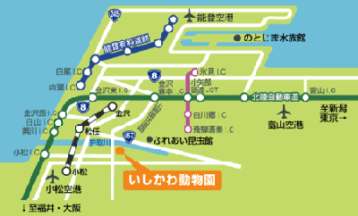
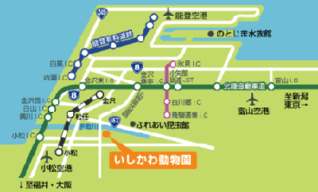
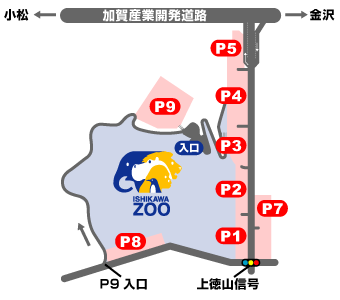
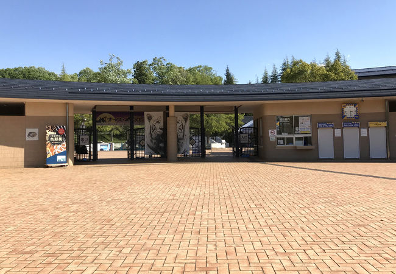

Commuting by car
| From Kanazawa Morimoto | From Kanazawa Nishi | From Mikawa | From Nomi Negami | From Komatsu |
|---|---|---|---|---|
| About 60 minutes (about 30km) | Approximately 40 minutes (approximately 16km) | Approximately 20 minutes (approximately 13km) | Approximately 20 minutes (approximately 11km) | Approximately 20 minutes (approximately 12km) |
 

Parking Information
| Normal vehicles spots | Bus spots | Cost |
|---|---|---|
| 1,210 | 16 | Free |


Direction from nearby bus stops
| Kanazawa Station | Komtatsu Station | Matto Station | |
|---|---|---|---|
| Weekdays | 8:51 departure 9:21 departure 12:11 departure 14:11 departure | 8:20 departure 10:00 departure 12:30 departure 15:00 departure | 8:15 departure 11:15 departure 14:15 departure |
| Weekends | 9:11 departure 12:26 departure 14:06 departure 15:41 departure | 8:35 departure 10:40 departure 13:40 departure | N/A |